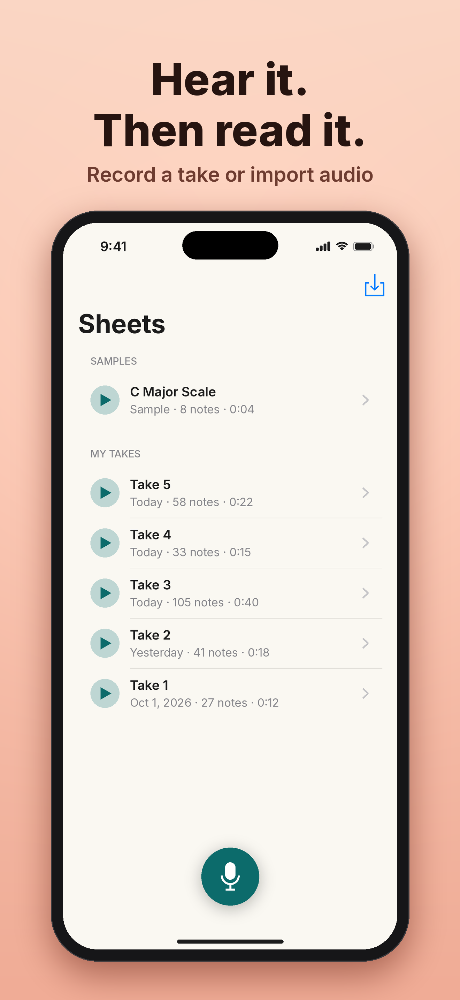
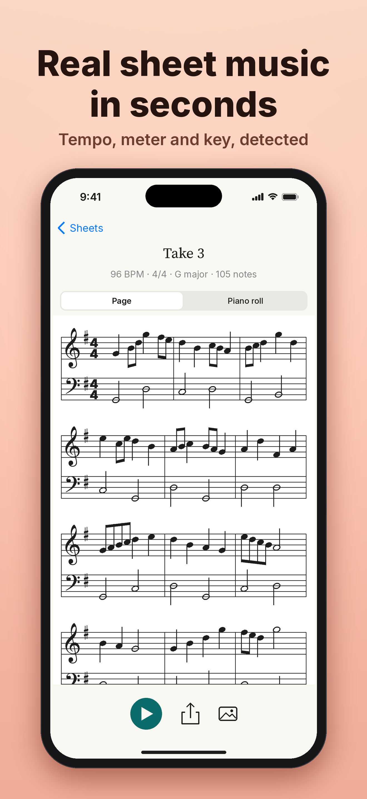
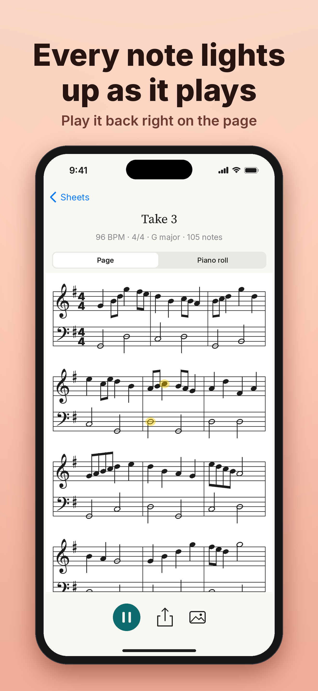
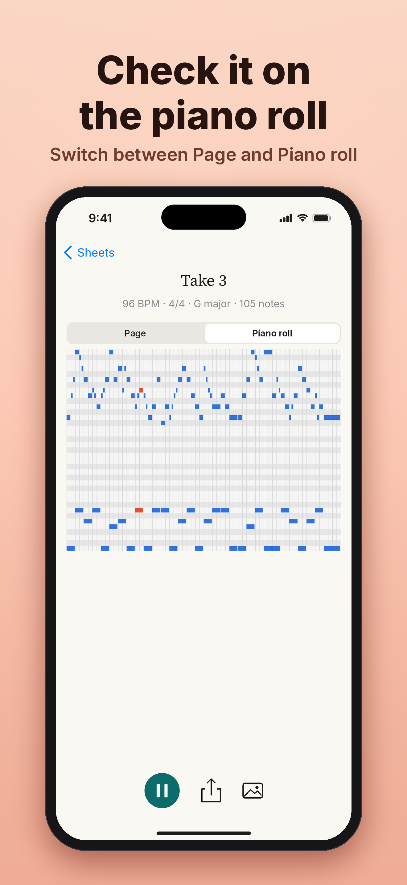
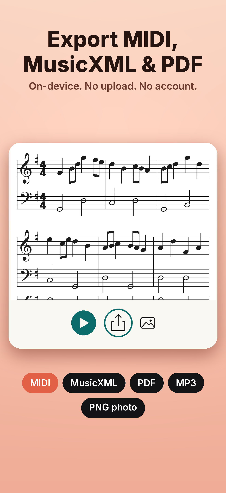

AI Music Radar turns what you hear into sheet music — live and entirely on your iPhone. For musicians who learn and write by ear: notes appear while you play, then you get a real engraved score, a piano roll, and MIDI / MusicXML / PDF export.
On your phone? Watch the 19-second vertical cut.
Three things no competitor in the category puts together.
The web demo transcribes at about 0.7 s latency. No competitor checked on iOS does real-time polyphonic transcription.
The Core ML model (Spotify Basic Pitch) runs locally. It works offline with no login — your audio never leaves the phone, and no server outage can take it down.
An engraved staff, tempo / meter / key estimation, playback with note highlighting, and MIDI / MusicXML / PDF that opens in MuseScore, Dorico, Sibelius or Logic.
From the App Store listing — the app as it runs on iPhone.





Mic to score, start to finish, on the Neural Engine.
The model is Spotify's Basic Pitch (ICASSP 2022 weights), pinned in models.lock with SHA-256 verification, shipped as versioned release assets — never in git.
Recent work tuned the decoder, not just the model — onset 0.7, frame 0.4, min note 5 frames — lifting note accuracy on real recordings with no retraining. Next: real dynamics. An audit found velocity was tracking model confidence, not loudness; a per-pitch energy calibration now beats both the old estimate and a trained neural head.
Because transcription runs on-device, the marginal cost is roughly zero — so there's a lifetime option almost nobody in the category has.